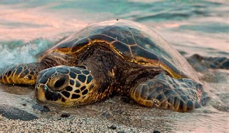
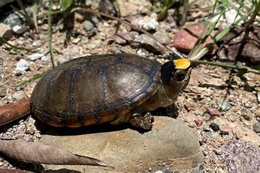

Características
Jalisco, México.- La recientemente descubierta tortuga casquito de Puerto Vallarta está en peligro de extinción. La asociación civil Estudiantes Conservando la Naturaleza presentó a la Comisión Nacional para el Conocimiento y Uso de la Biodiversidad (CONABIO) las amenazas inminentes y las oportunidades de conservación de la tortuga más pequeña del mundo.
La asociación está dedicada a la conservación de las tortugas de agua dulce y terrestres de México y a dar oportunidades académicas a jóvenes de bajos recursos.
- Tamaño pequeño, con un caparazón de hasta 60 cm de largo.
- Caparazón de forma ovalada y aplanado.
- Color del caparazón varía entre verde olivo y marrón.
- Cabeza y patas de color amarillo o crema.

Amenazas
- Anidación en playas con mucha actividad humana.
- Captura ilegal por su carne y huevos.
- Degradación y pérdida de hábitat por el desarrollo costero.
- Contaminación y basura en las playas.
Conservación
- Incluida en la NOM-059-SEMARNAT-2010 como especie en peligro de extinción.
- Programas de protección y monitoreo de nidos y crías.
- Campañas de concientización y educación ambiental.
- Necesidad de más investigación y acciones de conservación.
